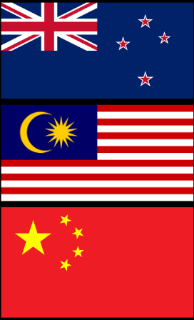

I am a Kiwi born citizen of Chinese descent. My parents were born in Malaysia and they came to New Zealand in 1995. I attended Point View Primary School, and Somerville Intermediate, before I came to BDSC. I live with my 2 parents, and my brother Eldon.
Pepeha
Ko Mt Ruapehu te maunga
Ko Pacific te moana
Ko Air New Zealand te waka
Ko Chan toku iwi
No Aotearoa ahau
Ko BDSC toku kura
Ko Andrew toku matua
Ko Joanne toku whaea
Ko Jaydon toku ingoa
No reira, tena koutou, tena koutou, tena koutou, katoa
